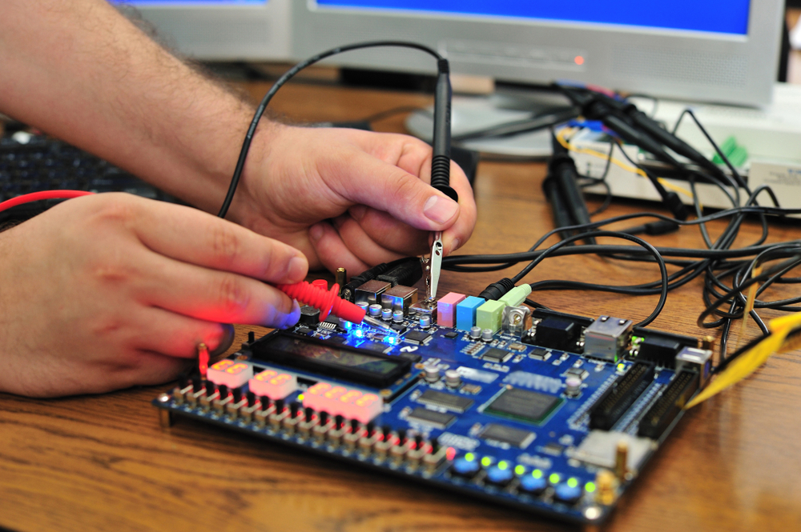

<div id="tab1">
  <h2> Engenharia </h2>
		<div class="curso1">
			
			<a target="_blank" href="https://querobolsa.com.br/cursos-e-faculdades/engenharia-civil"> Engenharia civil </a>
			<p><b> Duração:</b> em média, 5 anos.</p>
		</div>
		<div class="curso2">
			
			<a target="_blank" href="https://querobolsa.com.br/cursos-e-faculdades/engenharia-eletrica"> Engenharia elétrica </a>
			<p><b> Duração:</b> em média, 5 anos.</p>
		</div>
		<div class="curso3">
			
			<a target="_blank" href="https://querobolsa.com.br/cursos-e-faculdades/engenharia-de-computacao"> Engenharia da computação </a>
			<p><b> Duração:</b> em média, 5 anos.</p>
		</div>
		<div class="curso4">
			
			<a target="_blank" href="https://querobolsa.com.br/cursos-e-faculdades/engenharia-de-producao"> Engenharia de produção </a>
			<p><b> Duração: </b> em média, 5 anos.</p>
		</div>
		<div class="curso5">
			
			<a target="_blank" href="https://querobolsa.com.br/cursos-e-faculdades/engenharia-de-alimentos"> Engenharia de alimentos </a>
			<p><b> Duração:</b> em média, 5 anos.</p>
		</div>
		<div class="curso6">
			
			<a target="_blank" href="https://querobolsa.com.br/cursos-e-faculdades/engenharia-mecanica"> Engenharia mecânica </a>
			<p><b> Duração:</b> em média, 5 anos.</p>
		</div>
</div>